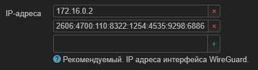
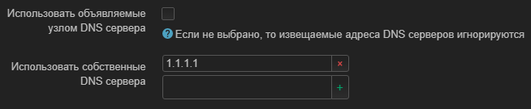
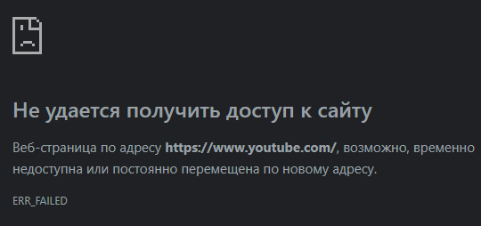

Антизапрет не позволяет добавлять свои адреса, по этому сейчас разговор не о нем. Я уже настроил обход блокировки на своем роутере в этом обсуждении.
Но в моем регионе, помимо блокировок РКН есть и местная блокировка для адресов google.con и youtube.com
На ПК и на смартфоне у меня установлен WireGuard с файлом настроек который прекрасно работает. Я вроде бы нагуглил инструкции как сделать тоже самое для роутера. Хоть пока и не тестировал. Но одно дело смартфон, там я только для ютуба его использую. А на ПК только иногда когда нужно быстро сменить IP или скачать файл с заблокированного ресурса. Для роутера желательно использовать WireGuard ТОЛЬКО для указанных адресов. Более того, что б он не конфликтовал с уже установленным антизапретом на OpenVPN. Но конкретно об этом в другой раз.
Насколько мне рассказали на другом форуме, для разблокировки ютуба и гугла недостаточно знать только их адрес. По факту это почти бесполезно. Нужно знать именно IP адреса сайтов, а сайт их может менять произвольно по этому желательно проксировать все возможные. И мне подсказали ресурсы где можно узнать их адреса по крайней мере для США.
https://asnlookup.com/organization/google/
https://asnlookup.com/organization/youtube/
Но что делать с этими адреса, как именно добавить их в белый список - тишина.
Спрашиваю у вас. Может кто-то знает решение этой проблемы? Я находил в гугле инструкцию, но она по первых полностью через командную строку выполнена. Во вторых там не ручной ввод адресов в белый список, а срипт для автообновления адресов заблокированных в России РКН что немного не то.
Прошло время, мне так и не ответили. Пытаюсь разобраться сам…
В конфиге я обратил внимание на строчки
AllowedIPs = 0.0.0.0/0
AllowedIPs = ::/0
“Разрешенные IP-адреса”, это и есть мой белый список? Неужели так просто? Что бы проверить, вписываю в конфиг все найденные адреса. Получается примерно так:
[Interface]
PrivateKey = ██████████████████████████████████████h3G3I=
# PublicKey = ██████████████████████████████████████OA2zg=
Address = 172.16.0.2
Address = 2606:4700:110:8322:1254:4535:9298:6886
DNS = 1.1.1.1
[Peer]
PublicKey = ██████████████████████████████████████Pfgyo=
Endpoint = engage.cloudflareclient.com:2408
# Endpoint = 162.159.192.9:0
# Endpoint = [2606:4700:d0::a29f:c009]:0
AllowedIPs = 64.15.112.0/24,64.15.115.0/24,64.15.118.0/23,64.15.123.0/24,64.15.126.0/24,70.32.133.0/24,103.111.147.0/24,104.237.164.0/24,104.237.167.0/24,104.237.168.0/22,104.237.172.0/24,104.237.190.0/24,136.22.130.0/23,136.22.132.0/23,156.38.33.0/24,156.38.34.0/23,156.38.37.0/24,156.38.39.0/24,176.29.0.0/24,176.29.203.0/24,176.29.205.0/24,176.29.209.0/24,176.29.210.0/24,176.29.215.0/24,176.29.216.0/21,176.29.224.0/21,176.29.253.0/24,176.29.255.0/24,176.126.58.0/24,185.192.249.0/24,185.225.248.0/24,197.230.59.0/24,197.230.70.0/24,208.117.234.0/24,208.117.236.0/24,208.117.238.0/24,208.117.240.0/24,208.117.250.0/24,208.117.252.0/24,208.117.254.0/24
AllowedIPs = 2001:fb0:109f:12::/64,2001:fb0:109f:14::/64,2001:fb0:109f:18::/63,2001:fb0:109f:8007::/64,2001:fb0:109f:8009::/64,2001:fb0:109f:8010::/64,2001:fb0:109f:8013::/64,2001:fb0:109f:8014::/64,2001:4430:f:104::/64,2001:4430:f:106::/63,2001:4430:f:108::/63,2001:4430:f:10a::/64,2001:4430:f:112::/64,2001:4430:f:114::/64,2001:4430:f:116::/63,2001:4430:f:118::/64,2400:9800:1b:1b::/64,2407:0:0:3d::/64,2620:11a:a000::/48,2620:11a:a011::/48,2620:11a:a01c::/48,2620:11a:a01f::/48,2620:11a:a024::/47,2620:11a:a029::/48,2620:11a:a02a::/48,2620:11a:a02d::/48,2620:11a:a02e::/48,2620:11a:a031::/48,2620:11a:a033::/48,2620:11a:a034::/48,2620:11a:a036::/47,2620:11a:a038::/46,2620:11a:a03c::/48,2620:11a:a0f1::/48,2a00:1588:d801::/48,2a00:1588:d802::/48,2a0f:f4c1:2::/48
Дальше нужно установить “wireguard-tools” ну и “luci-i18n-wireguard-ru” не помешает. Делается это как я помню в Система → Software c подключенным к интернету роутером. Перед поиском нужно нажать “Update lists…” иначе поиск не сработает.
Казалось бы я установили всего 2 пакета, но во вкладке Installed отображается 5. Все необходимые пакеты устанавливаются вместе (wireguard-tools, kmod-wireguard, luci-app-wireguard, luci-i18n-wireguard-ru, luci-proto-wireguard)
Перезагружаю роутер и на всякий случай делаю бэкап. Теперь во вкладке Состояние в самом низу появился пункт WireGuard в котором написано No WireGuard interfaces configured.
По аналогии с OpenVPN делаю все похожим образом.
Сеть → Интерфейсы → Добавить новый интерфейс…
Название пишу WARP
Протокол
WireGuard VPN
Создать интерфейс
Далее на помощь приходит Импорт конфигурации с кнопкой “Загрузка конфигурации…”
Перетаскиваю туда файл и вижу что все (?) настройки успешно применились?
Проверяю…
Приватный ключ вставился из строчки "[Interface] PrivateKey = "
Публичный ключ из "[Interface]# PublicKey = "
Порт для входящих соединений пустой, но и в конфиге его вроде нет
IP-адреса вставился из “[Interface] Address = 2606:4700:110:8322:1254:4535:9298:6886”, то есть только v6? Не знаю обязательно ли это, но вручную и v4 добавлю “Address = 172.16.0.2”


Во вкладке Дополнительные настройки
Использовать собственные DNS сервера вставился из “[Interface] DNS = 1.1.1.1”
И тут вроде все
Во вкладке Узлы (peers)
Добавилась новая настройка, жму “Изменить” что глянуть что внутри:
Описание warp.conf, это название того файлика что я загружал
Публичный ключ вставился из “[Peer] PublicKey =”
Разрешенные IP-адреса, сюда вставилось все то что я в "[Peer] AllowedIPs = " прописывал. Но опять же, только v6
Конечный узел вставился из “[Peer] Endpoint = engage.cloudflareclient.com:2408” но только до двоеточия
Порт конечного узла вставился из “[Peer] Endpoint = engage.cloudflareclient.com:2408” но только то что после двоеточия

И больше изменений не заметил.
Назрел вопрос. Программа случайно или намеренно игнорирует IP v4 адреса? Стоит ли мне их вручную добавить или нет? И если стоит, вставить их в этот же файл или создать новый?
Пожалуй добавлю их, в этот же файл.
Применяю все настройки.
В инструкции что я нашел написано так же остановить интерфейс WAN6. У меня эта кнопка не активна. Возможно инструкция только для конфига с IPv4 а у меня есть и v6, по этому то и не работает. Хз…
Теперь Сеть → Межсетевой экран → Добавить
Название ну например WG0
Input reject
Output accept
Forward reject
Masquerading галочка
MSS clamping галочка
Covered networks тот самый интерфейс WARP который я создал на прошлом шаге
Allow forward from source zones : lan
После сохранения вышло так

Снова применяю настройки
Возвращаюсь в интерфейсы
Сеть → Интерфейсы → WAN → Изменить
Во вкладке Дополнительные настройки убираю галочку Использовать объявляемые узлом DNS сервера и вписываю свой из конфига. Хз зачем. В интерфейсе WARP вроде бы тоже самое прописано, может не стоит еще раз это делать?

В инструкции WAN6 отключали, у меня же он работает. Так что наверно и там это пропишу…
Снова применяю настройки
Дальше в инструкции есть пункт Добавить Kill Switch (Опционально), но так как он не обязателен то и не буду делать. Да и не ясно че это и зачем…
Перезагружаю роутер…
̶И̶ ̶у̶ ̶м̶е̶н̶я̶ ̶у̶с̶п̶е̶ш̶н̶о̶ ̶п̶р̶о̶п̶а̶л̶ ̶и̶н̶т̶е̶р̶н̶е̶т̶!̶
Спустя какое то время интернет появился. Похоже настройки долго применяются.
Теперь во вкладке Состояние → WireGuard Status
Какой то узел отображается. Но как проверить что все работает? Пытаюсь зайти на ютуб без всяких VPN и прокси…
Ничего не выходит.
В одном браузере пишет

В другом пишет другое

{kind=link}
{kind=link}
Вывод. Или я чет не так настроил, что вполне вероятно. Или я указал не те, или не все IP адреса ютуба.
В любом случае надеюсь на помощь…